What every Filipino patient and family needs to know about dengue-associated acute kidney injury
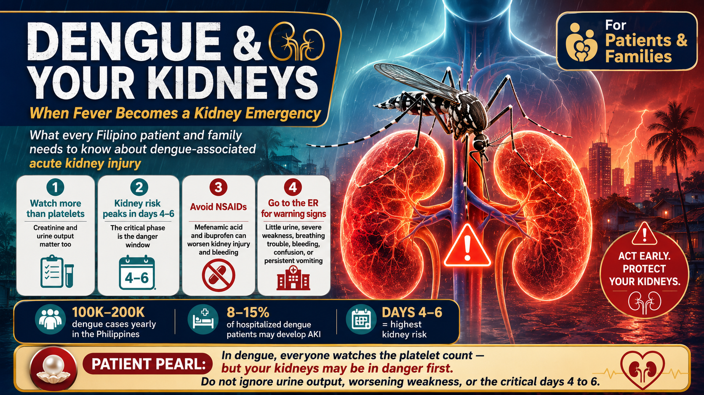
"You were told to watch your platelet count. Nobody told you to watch your creatinine."
Dengue is the most common mosquito-borne viral illness in the Philippines — the DOH records 100,000–200,000 cases annually. Most patients, families, and even some clinicians have been conditioned to track one number: the platelet count. But your kidneys are a primary target organ in dengue, and acute kidney injury (AKI) occurs in up to 8–15% of dengue hospitalizations. It is a distinct, underappreciated complication that can be life-threatening — and in CKD patients, it is even more dangerous.
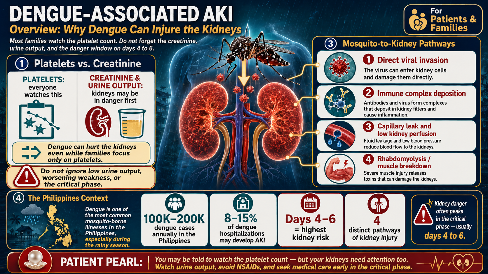
Acute kidney injury means the kidneys suddenly lose their ability to filter waste from the blood. In dengue, this happens through four separate pathways — not just one. Understanding these pathways helps explain why dengue AKI can present differently in different patients, why it is so easy to miss, and why the usual fever remedies Filipino families reach for can make kidney damage dramatically worse.
Mefenamic acid (Ponstan, Dolfenal) is the most commonly self-administered fever reducer in the Philippines. In dengue, it is contraindicated. It reduces blood flow to the kidneys at exactly the moment when dengue is already impairing kidney perfusion — and it dramatically increases the risk of serious bleeding. Paracetamol (Biogesic, Tempra, Tylenol) is the only safe fever reducer in dengue.
Dengue does not injure the kidney in one way. It attacks through four distinct mechanisms, and more than one can operate in the same patient at the same time. This multi-pathway assault is why dengue AKI can be severe even when it is caught early.
All four DENV serotypes (DENV-1 through DENV-4) can directly infect the cells lining the kidney tubules and the mesangial cells of the glomeruli. The virus also has tropism for the renal vasculature — the tiny blood vessels inside the kidney. Viral replication inside kidney cells causes direct cell death and triggers local inflammation.
As your immune system fights the virus, dengue antigens and your own antibodies form complexes that deposit in the glomeruli — the kidney's filtering units. This triggers mesangial proliferative glomerulonephritis: inflammation that causes proteinuria (protein in urine), hematuria (blood in urine), and reduced filtration. This mechanism explains why some patients have persistent kidney findings weeks after the fever resolves.
The most common and most reversible mechanism. The dengue virus causes widespread leakage from blood vessel walls — plasma escapes into body spaces (pleural effusions, ascites, tissue swelling). This dramatically reduces the volume of fluid circulating in the blood vessels, starving the kidneys of blood flow. When kidneys don't receive enough blood, they cannot filter: this is pre-renal AKI. With careful fluid resuscitation in hospital, most pre-renal AKI reverses within days.
Dengue causes myositis — inflammation and breakdown of muscle tissue, especially during the febrile phase. The severe myalgia (muscle pain) patients experience is a symptom of this process. As muscle cells break down, they release myoglobin into the bloodstream. Myoglobin is directly toxic to kidney tubular cells and precipitates inside the tubules, causing a distinct form of AKI. Rhabdomyolysis is underdiagnosed in dengue — particularly in adolescents and adults with extreme muscle pain — because CPK is rarely ordered in routine dengue workups.
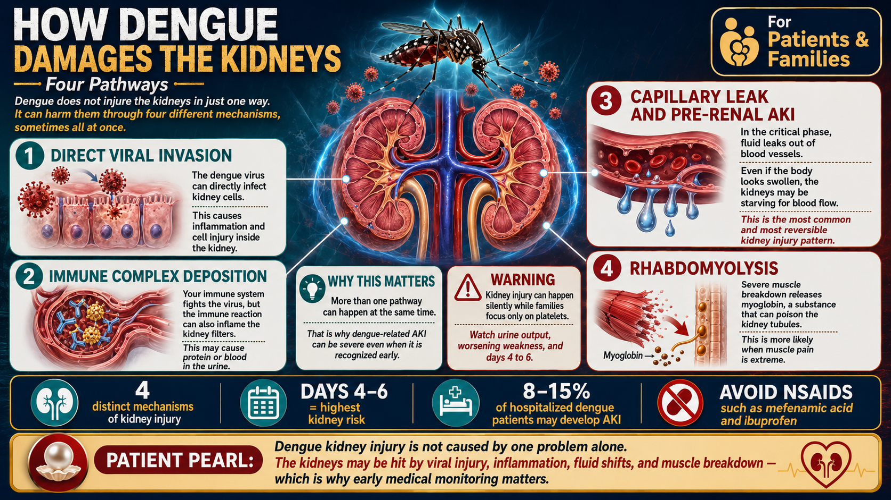
Dengue creates a physiologic trap that makes it uniquely dangerous compared to almost every other cause of AKI:
Plasma leaks out of blood vessels into body spaces. The heart is pumping blood, but there is not enough fluid inside the vessels to maintain adequate blood pressure and kidney perfusion. The kidneys see this as dehydration — even if the patient does not feel thirsty.
That same leaked plasma accumulates in the pleural space (around the lungs), the peritoneal cavity (abdomen), and soft tissues — causing breathlessness, abdominal distension, and visible swelling. The patient appears "fluid-overloaded" even as the kidneys are starving.
Aggressive oral or IV fluid administration worsens third-space accumulation — more fluid leaks into the pleural space and abdomen, risking pulmonary edema and respiratory failure. Fluid restriction worsens pre-renal AKI. This paradox is why dengue fluid management must be supervised in hospital. Self-treating dengue with high fluid intake at home is not safe — and giving ORS or "tubig lang" during the critical phase can cause respiratory failure.
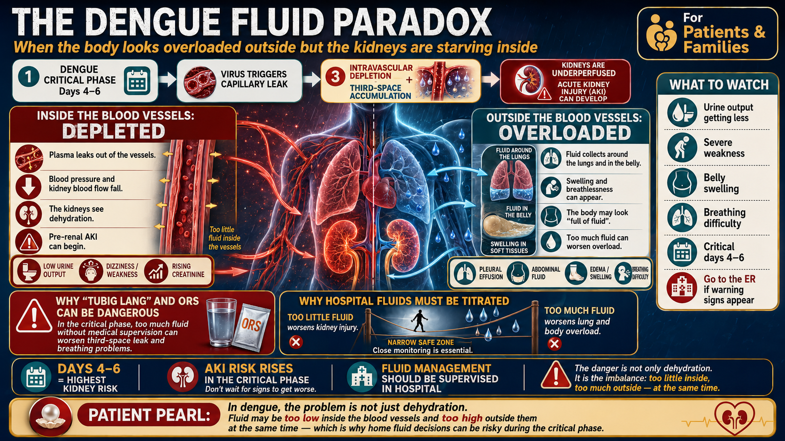
The WHO recognizes three phases in dengue illness. The kidney is at risk across all three — but the highest danger is concentrated in a narrow 24–48 hour window in the critical phase.
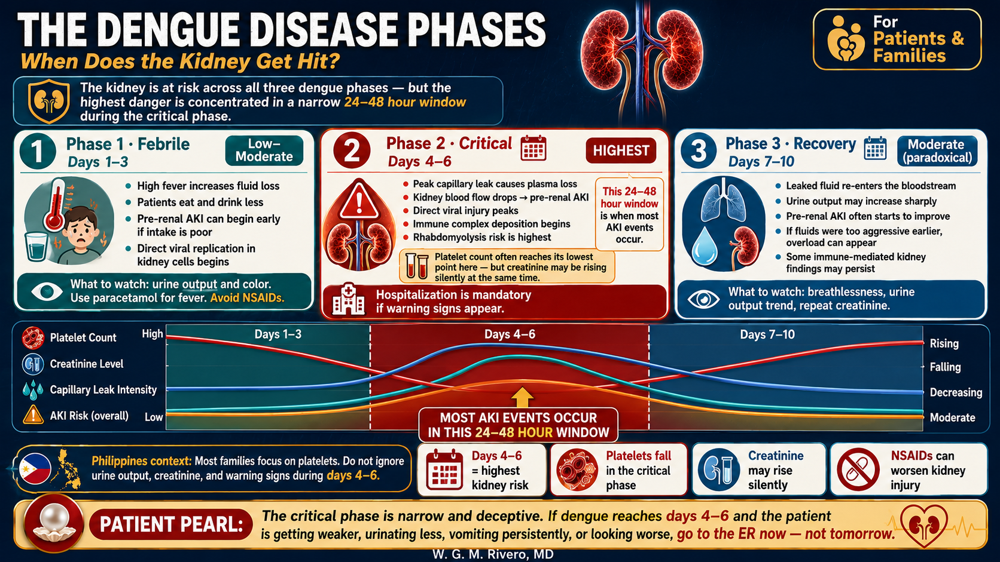
The critical phase is also when patients and families feel the worst. Extreme fatigue, muscle pain, and low platelet anxiety often lead to poor decisions: drinking less, taking mefenamic acid for the pain, staying home "to rest." This is the exact wrong response. If you are on days 4–6 of dengue and developing any warning sign, the time to go to the ER is now — not after you see how tomorrow goes.
During the rainy season, multiple febrile illnesses circulate simultaneously — and they can look alike in the first 48 hours. This comparison helps patients and families understand what distinguishes dengue from leptospirosis and other causes of fever. Note that both dengue and leptospirosis can occur in the same patient after typhoon flooding combined with mosquito exposure.
In post-typhoon scenarios, a patient can have dengue AND leptospirosis simultaneously. Mosquito populations surge after flooding, and leptospiral contamination of floodwater is common. If a febrile patient has both flood exposure and mosquito bite history, both diagnoses must be considered and tested. See our full guide: Leptospirosis & Weil's Disease.
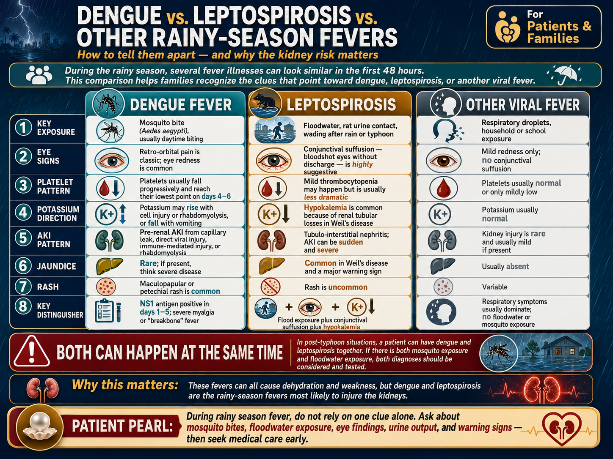
Patients with chronic kidney disease (CKD) face a disproportionately higher risk from dengue-associated AKI. A small hemodynamic insult that a healthy person's kidneys would easily weather can trigger a KDIGO Stage escalation in a CKD patient — and the consequences of that escalation can be permanent.
In CKD, the kidneys are already working at reduced capacity. The capillary leak of dengue's critical phase — which in a healthy person causes reversible pre-renal AKI — can push a CKD Stage 3 patient into Stage 4–5, or a Stage 4 patient into dialysis dependency. Even a modest drop in kidney perfusion causes disproportionate creatinine elevation when the baseline GFR is already low.
CKD patients already have impaired potassium excretion. Dengue adds two additional potassium loads: cell lysis from the viral and immune response, and myoglobin-driven rhabdomyolysis. The result is a dramatically elevated risk of life-threatening hyperkalemia — dangerously high potassium — during the critical phase. Point-of-care potassium monitoring every 6–8 hours is essential in hospitalized CKD-dengue patients.
Many CKD patients take ACE inhibitors (enalapril, lisinopril, ramipril) or ARBs (losartan, valsartan, telmisartan) for blood pressure and kidney protection. These medications blunt the kidney's ability to compensate for drops in blood pressure — which is exactly what happens during dengue's critical phase. During the dengue critical phase, a temporary "RAAS drug holiday" under medical supervision may be necessary.
CKD and heart failure patients on loop diuretics (furosemide/Lasix, torsemide) are especially vulnerable to volume depletion during dengue's critical phase. Continuing diuretics while capillary leak is removing intravascular fluid can precipitate acute-on-chronic kidney injury rapidly.
Any CKD patient with confirmed or suspected dengue should be hospitalized regardless of initial severity classification. There is no safe "home monitoring" option for CKD-dengue. The window between hemodynamic instability and permanent kidney injury loss is too narrow. Do not wait for warning signs to develop — go to the hospital at the first positive dengue test or strong clinical suspicion.
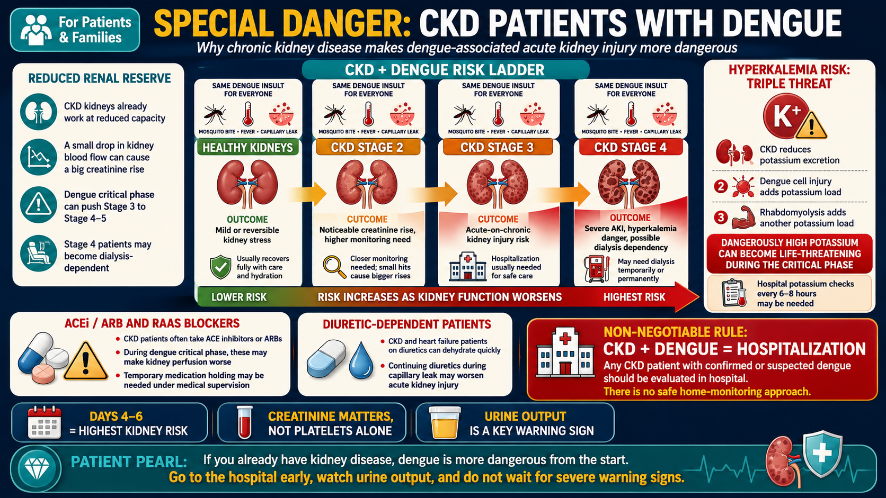
The following signs require immediate emergency evaluation. Do not wait for the next morning's clinic slot. Do not "observe" overnight. If you or a family member has dengue and develops any of the following, go to the ER now.
Less than 6 hours without urination is the critical threshold in dengue (narrower than other AKI causes because the damage window is compressed). Count from the last time you or your family member urinated.
Black tarry stools (melena), vomiting blood, gum bleeding that doesn't stop, unusually heavy menstrual bleeding, or blood in the urine. Thrombocytopenia + capillary fragility = severe bleeding risk.
Breathlessness at rest or fast breathing plus cold, clammy hands and feet signal dengue shock syndrome — a medical emergency requiring immediate IV resuscitation.
Confusion, extreme irritability, unresponsiveness, or inability to stay awake normally — all are signs of end-organ involvement (brain, kidney, or liver) and require immediate evaluation.
While platelet level alone does not define kidney risk, a platelet below 100,000 confirms you are in the critical phase window. Hospitalization for monitoring is indicated at this threshold.
Severe or persistent abdominal pain in dengue may indicate plasma leakage causing peritoneal fluid accumulation, hemoperitoneum, or early dengue hepatitis — all requiring inpatient evaluation.
If vomiting prevents you from keeping down any oral fluids, you cannot maintain the oral hydration needed to prevent pre-renal AKI. IV fluid access in hospital is necessary.
Lower threshold: any dengue — regardless of severity classification — in a patient with known CKD requires ER evaluation and likely hospitalization. Do not apply standard dengue triage criteria to CKD patients.
If you are already admitted and receiving IV fluids but urine output is not improving after 2–4 hours, this may signal transition from pre-renal (reversible) to intrinsic AKI (requiring nephrology evaluation).
Severe myalgia plus dark (tea-colored or cola-colored) urine suggests rhabdomyolysis. This combination requires urgent CPK testing and aggressive IV hydration under medical supervision.
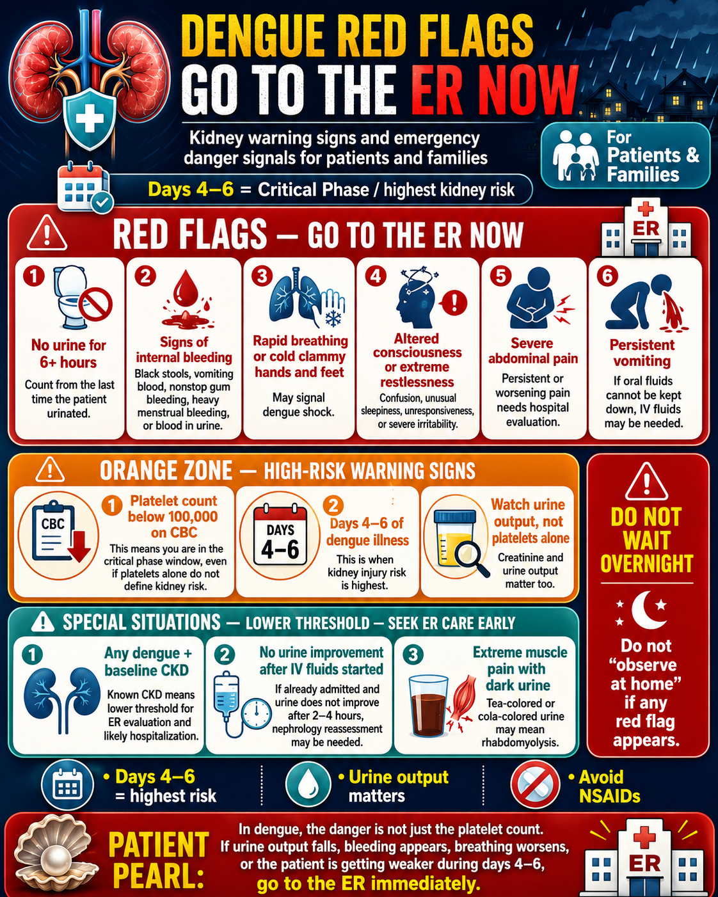
This section explains what happens — and why — when you are admitted for dengue with kidney involvement. It is not a self-treatment guide. All of the interventions described below must be supervised by physicians.
The primary treatment for dengue-AKI (when the mechanism is pre-renal capillary leak) is carefully titrated intravenous fluid replacement. The goal is to maintain blood pressure and kidney perfusion without over-filling the third space. Doctors start with isotonic crystalloids (normal saline or Ringer's lactate) at low volumes and reassess every 1–2 hours. If the patient does not respond, colloid solutions may be added. IV fluid dosing in dengue is not "more is better" — over-resuscitation causes pulmonary edema in the recovery phase.
Hospital monitoring targets urine output of 0.5–1 mL/kg/hour as the primary indicator of kidney perfusion. Daily weight is tracked to monitor net fluid balance. Serial hematocrit (Hct) readings are the most reliable indicator of capillary leak severity — a rising Hct means more plasma is leaking out. When the Hct starts to fall back toward normal, the recovery phase has begun and IV fluids should be reduced.
Platelet transfusion is the most feared intervention in dengue, but it has no direct effect on kidney outcomes. Current guidelines limit transfusion to platelet counts below 10,000–20,000 with active bleeding, or below 50,000 before surgical procedures. Managing fluid balance correctly for kidney protection matters far more than the platelet number.
A minority of dengue-AKI patients require dialysis support. Indications include: fluid overload causing respiratory compromise (pulmonary edema), dangerous hyperkalemia (K+ > 6.5 mEq/L), severe metabolic acidosis, and uremia causing altered consciousness. The critical message: dengue AKI is largely reversible. Most patients who require dialysis during acute dengue will not need it permanently. Dialysis bridges the patient through the acute phase while the kidneys recover.
The most dangerous drug in dengue. Mefenamic acid is an NSAID that reduces prostaglandin production — the exact signaling molecules the kidneys use to maintain blood flow when systemic blood pressure drops. In dengue's critical phase, when blood pressure is already compromised by capillary leak, removing this protective mechanism causes a dramatic further reduction in kidney perfusion. Simultaneously, all NSAIDs impair platelet function and increase bleeding risk — catastrophic when platelets are already at their nadir. There is no safe dose of mefenamic acid in dengue fever.
Same NSAID mechanism as mefenamic acid. Also impairs prostaglandin-mediated renal autoregulation and worsens bleeding risk. The fact that ibuprofen is "milder" than mefenamic acid does not make it safer in dengue — both are equally contraindicated.
Aspirin's antiplatelet effect is irreversible and lasts 7–10 days. In dengue thrombocytopenia, aspirin dramatically worsens bleeding risk. Contraindicated even at low ("cardio") doses during dengue illness. Patients on prophylactic aspirin for heart disease should discuss temporary suspension with their cardiologist if dengue is confirmed.
Nephrotoxic antibiotics have an even higher risk of causing tubular injury when the kidney is already under hemodynamic and viral stress. If antibiotic coverage is needed (e.g., for co-infection), non-nephrotoxic alternatives should be used unless no other option exists.
Paracetamol (acetaminophen) — Biogesic, Tempra, Panadol, Tylenol at standard doses is the only recommended fever reducer in dengue. It does not affect platelet function, does not impair renal prostaglandins, and does not increase bleeding risk. Maximum adult dose: 500–1000 mg every 6–8 hours. Do not exceed 4 g per day in adults (lower if liver function is impaired).
Most Philippine community hospitals order a CBC and dengue serology and stop there. If you or a family member has dengue, advocate for these additional tests — especially creatinine.
Across the Philippines, creatinine is not a standard part of the dengue admitting order set in most community hospitals. AKI goes undetected until it is severe. If you are admitted for dengue, explicitly request: "Doctor, pwede po bang may creatinine sa mga blood tests?"
| Test | What It Shows in Dengue | Significance |
|---|---|---|
| CBC with platelet | Thrombocytopenia (platelet nadir days 4–6), hemoconcentration (rising Hct reflects plasma leakage) | Standard dengue marker — ordered universally |
| Creatinine / BUN | Elevation signals AKI — may be subtle (10–20% rise) early, then escalates in critical phase | CRITICAL Order with every dengue admission. Compare to any prior baseline if CKD known. |
| Potassium (K+) | May rise (cell lysis, rhabdomyolysis, AKI) or fall (vomiting, poor intake) | Monitor daily; every 6–8 hours in CKD patients during critical phase |
| NS1 Antigen | Positive Days 1–5 — detects the dengue virus itself in early illness | Best early confirmatory test; sensitivity drops sharply after Day 5 |
| Dengue IgM / IgG | IgM positive from Day 5 onward; IgG pattern distinguishes primary vs. secondary infection | Secondary infection (IgG-dominant) carries higher risk of DHF; confirms past exposure |
| CPK (creatine phosphokinase) | Elevated > 1000 U/L in rhabdomyolysis; can reach 10,000–100,000+ in severe cases | Order if severe myalgia + rising creatinine + dark urine. Often missed because not part of standard dengue panel |
| Urinalysis | Proteinuria, hematuria (RBCs), granular casts (tubular injury), myoglobin (rhabdo) | Evidence of glomerular or tubular involvement; should be ordered at admission and repeated daily in AKI |
| Hematocrit (Hct) trend | Rising Hct = plasma leakage into third space = critical phase entry. Hct falling back toward normal = recovery phase beginning | Trend is more important than a single value — order serial Hct every 6–12 hours in hospitalized patients |
| Liver enzymes (AST/ALT) | Elevated in dengue hepatitis, especially in severe disease | Relevant to paracetamol dosing ceiling; order at admission in all severe dengue |
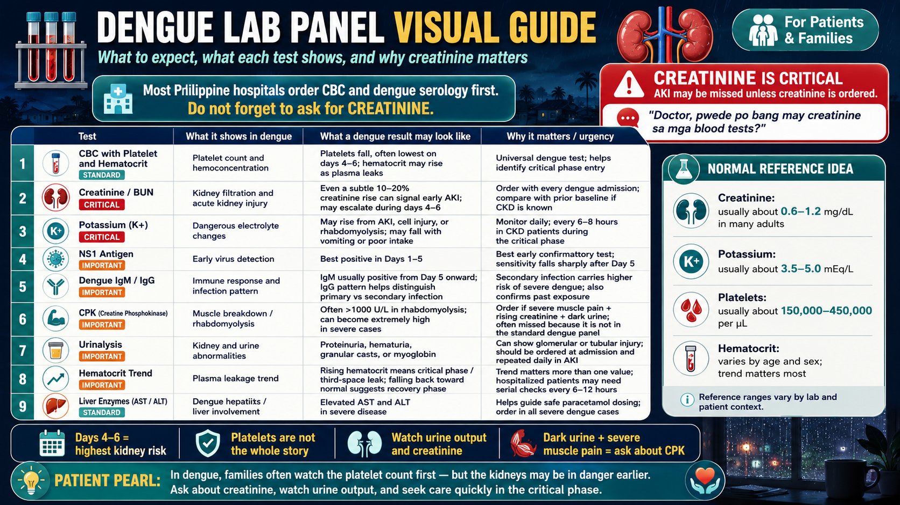
The recovery trajectory from dengue AKI depends on which mechanism caused the kidney injury. The news is mostly reassuring — but complete follow-up is essential.
If the kidney injury was primarily from capillary leak reducing blood flow — the most common mechanism — creatinine typically returns to near-baseline within 1–2 weeks of the recovery phase. Urine output normalizes as third-space fluid reabsorbs. Patients can expect full recovery in most cases, though repeat creatinine testing at 2 and 4 weeks is still important to confirm resolution.
Myoglobin-driven tubular injury takes longer to resolve as the kidney tubule cells regenerate. CPK levels should fall progressively; creatinine follows the CPK trend. Most patients with rhabdomyolysis AKI recover fully, though recovery may take 4–6 weeks. Serial creatinine and urinalysis at weeks 2, 4, and 8 are recommended.
Immune complex deposition causing mesangial proliferative glomerulonephritis can persist beyond 4–8 weeks. Proteinuria and microscopic hematuria may continue after the fever resolves. All patients with evidence of immune-mediated dengue GN (proteinuria, hematuria, slow creatinine decline) should have a nephrology follow-up visit at 4 weeks and 3 months post-discharge.
CKD patients who develop dengue AKI may not fully return to their prior creatinine baseline. A significant dengue-AKI episode can permanently reduce GFR by an additional 10–20%, effectively advancing the CKD stage. This makes post-dengue nephrology follow-up mandatory for all CKD patients, with a clear plan for reassessing the new eGFR trajectory and updating management targets.
Week 2: Creatinine, urinalysis — confirm improvement trajectory.
Week 4: Creatinine, urinalysis, urine protein — check for persistent proteinuria or hematuria.
Month 3: Creatinine, urinalysis, urine ACR — any proteinuria persisting beyond 3 months requires nephrology referral for possible immune-mediated GN evaluation.
Dengue transmission peaks from June through October during the rainy season in most of the Philippines. Highest-burden regions: NCR, Calabarzon, Central Visayas, Davao. However, dengue is endemic year-round in these areas — off-season cases are common. Any fever after a mosquito bite outside these months still warrants dengue testing.
Dengue hospitalization is covered under the PhilHealth Dengue Case Rate package. Note: this is not a Z-package (which covers catastrophic illness). For prolonged hospitalization with AKI, the case rate may be exhausted quickly — particularly if dialysis support is required. Patients facing prolonged dengue-AKI hospitalization may apply to PCSO-IMAP for supplemental assistance.
BHCs in most municipalities now carry dengue rapid test kits (NS1 antigen). A positive NS1 at the BHC is an actionable result — especially in a CKD patient or patient with warning signs. BHC nurses can also facilitate immediate referral to a district or provincial hospital for dengue with warning signs. Do not delay by seeking a "second opinion" if the rapid test is positive and warning signs are present.
Basic creatinine testing is available at most rural health units and district hospitals. If you are admitted to a community hospital with dengue, it costs approximately ₱120–300 and takes under 2 hours to result. This single test can identify kidney injury before it becomes severe — and potentially prevent a dialysis episode. Ask your doctor for it. If your doctor says it's not needed: respectfully ask again.
This estimator uses key clinical parameters to generate an AKI risk stratification. It is a decision-support tool only — not a substitute for clinical judgment or physician evaluation.
Enter current values to estimate AKI risk and get a triage recommendation.
This tool is a clinical decision-support aid only. It does not replace physician evaluation. Results should be interpreted alongside the full clinical picture. Not validated for pediatric patients (<12 years).
Three distinct AKI phenotypes in dengue require different management approaches and have different recovery trajectories:
| Phenotype | Mechanism | Timing | KDIGO Features | Recovery |
|---|---|---|---|---|
| Pre-renal | Capillary leak → intravascular depletion → reduced renal perfusion | Critical phase (Days 4–6) | Rapid creatinine rise; FENa <1%; urine Na <20 mEq/L; responds to careful volume resuscitation | Excellent; typically reverses within 24–72h of adequate resuscitation |
| Intrinsic renal | Direct DENV tubular injury; immune complex GN; rhabdomyolysis-ATN | Critical phase + early recovery | FENa >1%; tubular casts on UA; does not fully respond to fluids; proteinuria + hematuria in GN | Good but slower; 2–6 weeks for rhabdo-ATN; months for immune GN |
| Post-renal | Retroperitoneal hematoma causing ureteral obstruction (rare) | Any phase; suspect with unilateral flank pain + AKI | Renal ultrasound: hydronephrosis, retroperitoneal collection | Excellent if obstruction relieved promptly |
Pre-renal and intrinsic AKI co-exist in a significant proportion of dengue-AKI cases. A patient with capillary leak may simultaneously have tubular injury from direct viral invasion or rhabdomyolysis. CPK and urinalysis should be ordered in all dengue admissions where creatinine is elevated, not only when rhabdomyolysis is clinically suspected.
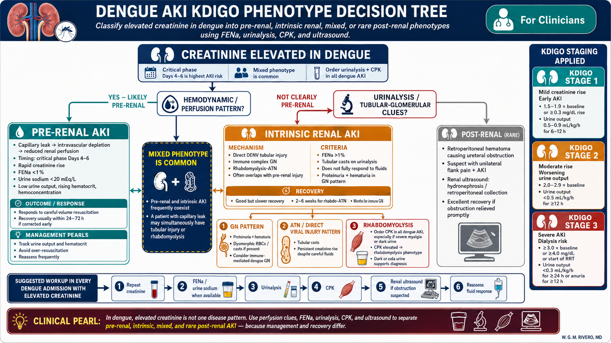
The WHO dengue fluid algorithm must be adapted when AKI is superimposed. Targets diverge from standard dengue resuscitation.
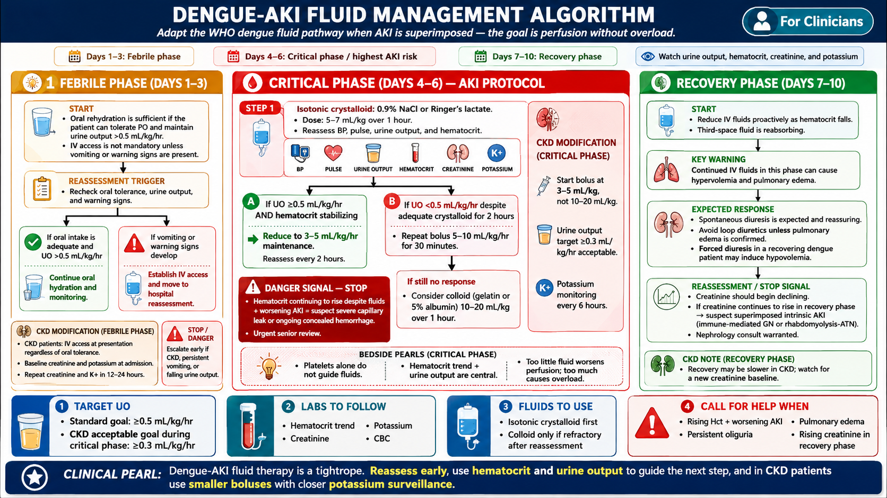
ACEi and ARBs should be held during the dengue critical phase in CKD patients. These agents impair the efferent arteriolar constriction that maintains GFR when afferent pressure is falling. Resumption should be considered once creatinine returns to near-baseline and the patient is hemodynamically stable — typically 1–2 weeks post-discharge. Document the hold and resumption plan clearly.
Loop diuretics should be suspended during the critical phase in CKD patients receiving dengue fluid resuscitation. The plasma leak is removing intravascular volume simultaneously with the diuretic — the combined effect can precipitate severe pre-renal AKI with remarkable speed. Resume only in the recovery phase if fluid overload with respiratory compromise occurs.
At admission: K+, creatinine, bicarbonate, CBC, urinalysis, NS1/dengue serology.
Every 6–8 hours during critical phase: Point-of-care K+ (iSTAT or equivalent). Serum K+ every 12 hours if POC not available.
K+ thresholds for action:
>5.5 mEq/L: restrict dietary K+, suspend K+-sparing agents, repeat in 4 hours
>6.0 mEq/L: calcium gluconate IV, sodium bicarbonate, insulin/dextrose. Consider nephrology consult.
>6.5 mEq/L or ECG changes: emergency dialysis evaluation.
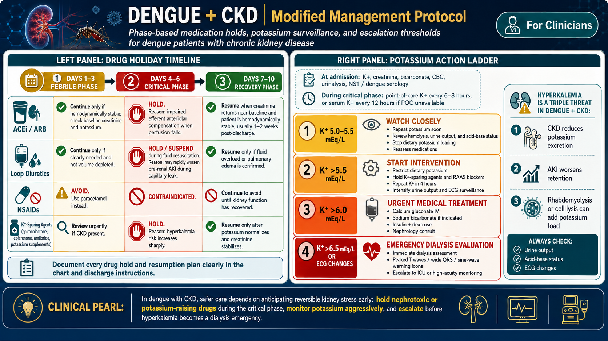
Dengue rhabdomyolysis is underdiagnosed because CPK is not part of the standard dengue order set. Consider it in any dengue patient with disproportionate myalgia, creatinine elevation unexplained by volume depletion alone, or cola/tea-colored urine.
CPK >1000 U/L: rhabdomyolysis confirmed. CPK >5000 U/L: significant AKI risk. CPK >15,000–20,000 U/L: high risk of dialysis-dependent AKI. Urine myoglobin correlates with CPK but is less readily available in Philippine settings — dark urine in a context of severe myalgia is sufficient clinical grounds to initiate treatment.
Target urine output of 200–300 mL/hr until urine clears (no myoglobinuria). IV crystalloid rates of 200–400 mL/hr may be required initially. This significantly exceeds dengue standard fluid management — balance against capillary leak phase. In the critical phase, rhabdo-targeted hydration must be done cautiously to avoid worsening third-space accumulation.
Sodium bicarbonate infusion (target urine pH >6.5) reduces myoglobin cast precipitation in tubules. Evidence is moderate but widely practiced in Philippine nephrology units. If creatinine continues to rise despite aggressive hydration, or if hyperkalemia, acidosis, or oliguria develops despite adequate fluids → HD or CRRT indicated. Expected duration: 1–3 weeks before tubular regeneration.
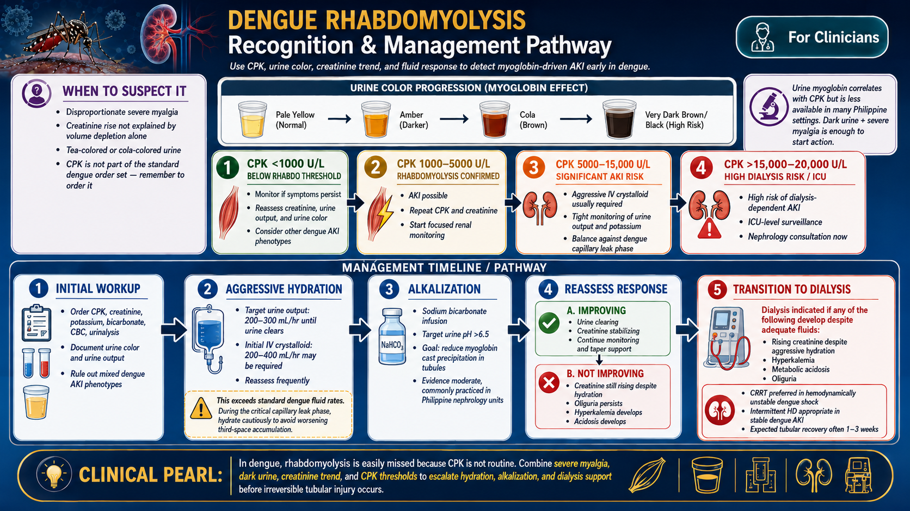
Any one of the following warrants urgent dialysis initiation:
— Fluid overload causing respiratory compromise (pulmonary edema, SpO₂ <92% on room air)
— Hyperkalemia K+ >6.5 mEq/L or with ECG changes (peaked T waves, wide QRS, sine wave)
— Severe metabolic acidosis pH <7.1 or HCO₃ <10 mEq/L refractory to bicarbonate
— Uremic encephalopathy or pericarditis
Dengue shock syndrome with AKI requiring dialysis is best managed with CRRT (continuous renal replacement therapy). Standard intermittent HD requires a minimum MAP of ~65 mmHg for safe vascular access pressure — hemodynamically unstable dengue shock patients frequently cannot tolerate this. CRRT is available at most Philippine tertiary and level 3 secondary hospitals.
For hemodynamically stable dengue-AKI patients meeting dialysis criteria, standard intermittent HD 3–4 hours daily or every 48 hours is appropriate. Expected dialysis duration: 1–2 weeks in most pre-renal and rhabdo-ATN cases. CKD patients may have a prolonged or permanent requirement if the AKI superimposed on CKD results in a new, lower GFR baseline.
PD is theoretically available as a last resort in settings without HD/CRRT, but dengue creates specific contraindications: dengue-associated ascites and peritoneal fluid accumulation impair PD fill volumes and drainage; thrombocytopenia increases the risk of intra-abdominal hemorrhage from catheter insertion; and dengue hepatitis may impair peritoneal membrane function. PD should be reserved for settings where neither HD nor CRRT is available, with careful patient selection.
Dengue AKI requiring dialysis support is not the same as ESKD requiring permanent dialysis. The overwhelming majority of patients who require dialysis during acute dengue illness will recover kidney function and be dialysis-free within 2–4 weeks. The permanent dialysis rate from dengue AKI is low — driven almost entirely by pre-existing severe CKD where the AKI tipped the patient into a new lower functional baseline. Communicate this clearly to patients and families during the acute phase.
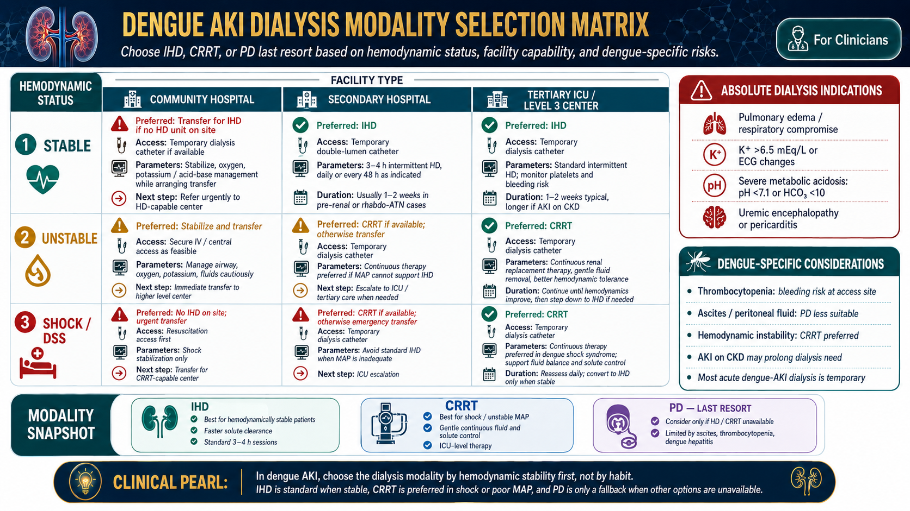